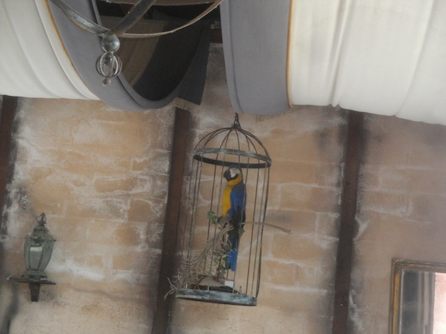
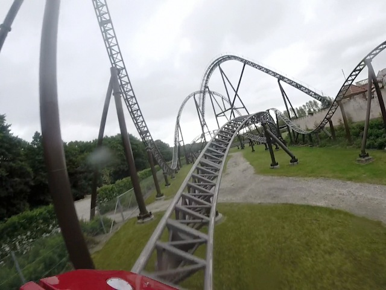
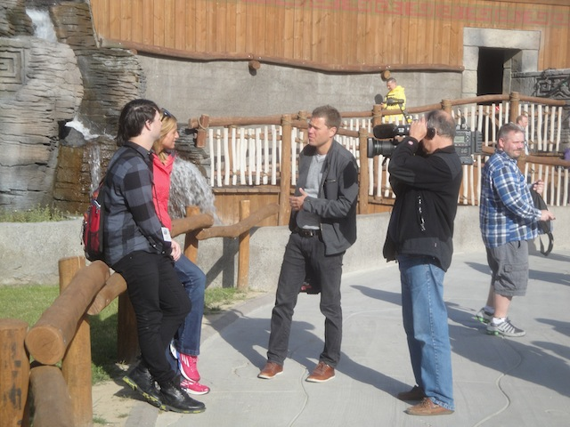
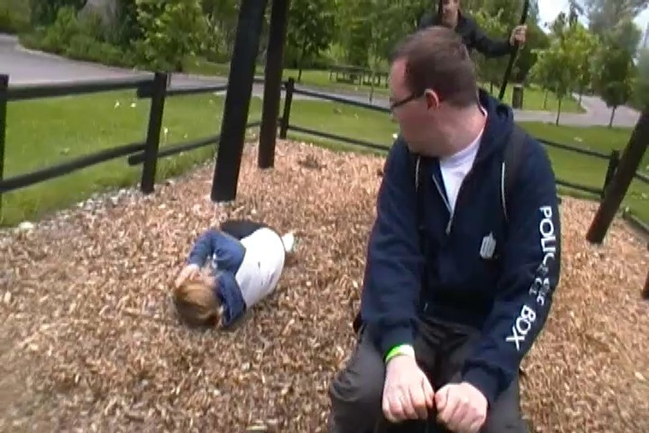
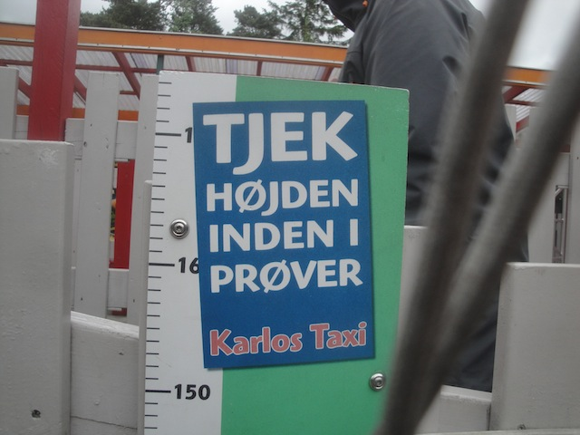
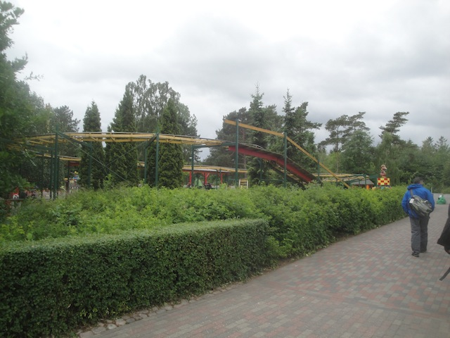
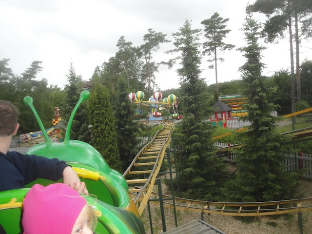
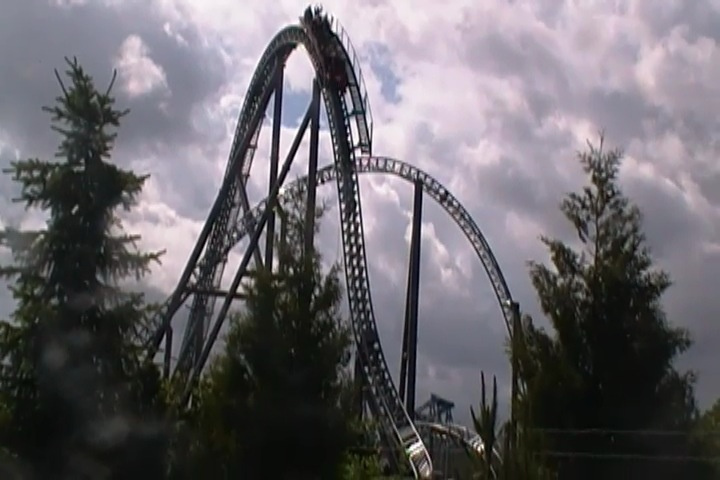

All right. Time for our next park. Today, we're at the world of Djurs Sommerland, which was one of the highly anticipated parks on the trip. And of course, the park is extremely happy to see us.
First things first, let's start out ERT on Djurs Sommerland's newest coaster. Juvelen.
It may not be the star attraction of the park, but Juvelen is a damn good coaster.
It's very much like Manta @ Sea World San Diego. So that's a really good sign.
These turns in the 2nd half are GOOD!!! Really good!!!
Do not understimate this ride. It really does kick ass.
Juvelen may be fun and all, but it's time we moved onto the star attraction of the park.

Best line theming ever.
Yep. We now have 90 minutes of ERT on Piraten, also known as...
AN INTAMIN MEGA-LITE!!! Yep, I finally got on an Intamin Mega-Lite today!!! =)
And yes, it is an airtime machine. That's the only part of the ride that doesn't have any airtime.
YOINK!!! EJECTOR AIR!!!

The first half may be really good with some ejector air, but this is the moment on the ride where it really starts to get crazy.
Ass, say goodbye to your seat.
As if ERT on a ride like this wasn't good enough, we got to play crazy games such as Pass the Sword (Don't drop it Doug)!!! ;)

And of course, we had a TV crew come and film us because, apparently we're interesting enough to be in Danish News.
I'm not one of the people they spoke to, but if you have sharp eyes, you'll see me for a split second. =)
After giving up on Peter Pan, Captain Hook has decided to retire at Djurs Sommerland for easy access to the Mega-Lite.
Well, the park is open. So let's get the low capacity rides out of the way.
Unlike many water coasters, this one actually counts as a credit, so ride it we must.
Ignore the 55 degree F (13 degree C) weather and just enjoy the ride.
Ok. Maybe this wasn't such a good idea.
"Ugh. Now I'm all wet. Damn it Kevin!!!"
"Ever felt down because you lack Spunk? Well fear no more. Spunk is avaliable for purchase at Djurs Sommerland for only 50 kr."
Continuing on with the credits, we move onto Thor's Hammer.
While technically not my first Gerstlauter Bobsled, it was my first Bobsled that wasn't an indoor lateral-fest.
I must admit. It was a fun little ride.
Warning. Rain may randomly fall on you on this ride.
Really hope more bobsleds like this end up being built.
"Excuse me, but where's the entrance to this ride? I can't seem to...F*ck it!! Never mind!!!"
This path better lead us straight back to the Mega-Lite.
"This is the only exercise we're gonna get all day!!!"
Not even movie star, King Kong is safe from harm at Djurs Sommerland. =(
"Something terrible has happened!!!"
Just like at Nickelodeon Universe, they run their chairswings here backwards. Sweet!!! I'm not gonna make that same mistake this time. Well...I learned that they only run backwards for part of the day, and they returned forewards when I came back. =(
Stop it!! This is not good for the buffalo!!
All right. Time for lunch, and Djurs Sommerland put out a good spread for us.
Why can I only get Diet Fanta here?
While this may look similar to the bake-your-own bread at Hansa Park and Legoland Billund, this one just straight out gives you raw dough that's inedible and you have to completely cook it yourself!! I love Europe. =)
Hey Neil!! How's El Toro? =)
"All right. We're gonna ride Ornen. Why is this such a big deal?"
"Because to my knowledge, Ornen is the only Topple Tower still running in the world!!! I thought they had all gone extinct, but nope. The one at Djurs Sommerland still works. Sorry about the lack of a photo of it in motion. I could either ride the Topple Tower or get offride shots of the Topple Tower, and I'm sure you know what choice I made. But hey, it was open and...all the stuff said about them are true. They're fun, but not nearly as cool as they look. So while it's not anywhere near the best flat ride ever, I'm glad I rode it just for its sheer uniqueness.
"Sh*t!! What happened to that seat I was supposed to put up here!!?"

BROOKE IS DOWN!!! I REPEAT!!! BROOKE IS DOWN!!!
I love how all the parks around here have these awesome bouncing pillows.
Oh look. How many of those places have we been to so far? =)
Come on lads!! Let's all go become pirates!!
And of course, we had to get more rides on the Mega-Lite.
Don't be fooled by it's looks. It's one of the best coasters out there.
After pushing down the bar for so many overweight Americans, I'm grateful that my job is now so much easier.
I kind of regret not riding this tilting drop tower. It looked like a fun, or at least interesting, ride.

Oh Crap!! We still have one last credit I nearly forgot about!!

Yes, what day would be complete without a ride on the classic Wacky Worm.

Screw the Mega-Lite!! Best ride in the park!!
Come on everyone!! Climb up the triangle of death!!
Get your ass down that slide Garbles.
Neil has apparently given up on the triangle and is sliding on down.
They also have these spider-webs (or at least that's what I've been calling them) for you to climb on.
And of course, we just had to end the visit with a ride on Piraten.
Mmm. Mega-Lite Goodness *drools*.

Good-bye Djurs Sommerland. You're an awesome park and (provided I play my cards right) I'm really looking foreword to riding another Mega-Lite in 2015. =)